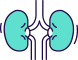

-
진료안내
- 정확한 진단과 근본적인 원인을 치료하는 병원이 되겠습니다.
만성질환 클리닉
- 고혈압이란?
- 고혈압은 별다른 증상을 동반하지 않으므로 정기적으로 체크하여 관리해야 합니다. 병원을 2회 이상 방문하여 2회 이상 연속 검사한 혈압이 140/90mmHg 이상일때 고혈압으로 진단됩니다.
성인 고혈압 기준
| 혈압의 범위 | 수축기혈압 (mmHg) | 이완기혈압 (mmHg) |
|---|---|---|
| 정상 | 120 미만 | 80 미만 |
| 고혈압 전단계 | 120 ~ 139 | 80 ~ 89 |
| 1단계 고혈압 | 140 ~ 159 | 90 ~ 99 |
| 2단계 고혈압 | 160 이상 | 100 이상 |
고혈압 위험 요인
나이 55세 이상
가족력 (유전적 영향)
비만
운동부족
짜게먹기 (소금과잉섭취)
흡연, 음주
스트레스
이상지질혈증
환자가 조절할 수 없는 위험요인
환자가 조절할 수 있는 위험요인
고혈압으로 인한 합병증
-
뇌질환
뇌졸중
뇌경색
뇌출혈
혈관성 치매
-
눈질환
고혈압성망막증
-
심장질환
협심증
심부전증
심근경색
부정맥
대동맥박리
-

신장질환
신부전증
신경화증
-
생식기질환
성기능장애
- 고혈압 관리방법
- 고혈압은 지속적인 운동과 함께 균형 잡힌 식사 및 적절한 약물 치료가 필요합니다.
- 운동관리
- 운동은 주 3회 이상 한 번에 30분 이상의 속보 운동이 중요합니다. 규칙적이고 각자의 신체에 맞는 적절한 운동은 혈압을 5mmHg 정도 낮출 수 있습니다.
- 단, 운동 중 조이는 듯한 흉통 또는 가슴이 답답함, 어지럼증, 호흡곤란, 숨참, 극심한 피로감 등의 이상 증세가 보이면 즉시 운동을 중단합니다.
- 식이관리 및 생활 관리
- - 저염식 : 소금의 섭취를 줄이면 상당한 혈압의 저하를 기대할 수 있습니다.
- - 칼슘, 칼륨 섭취 : 칼슘과 칼륨을 적당히 섭취하면 혈압 강하의 효과를 거둘 수 있습니다. (신선한 야채, 과일 섭취)
- - 지방 섭취 제한
- - 음주 및 금연
- - 스트레스 덜 받기 및 수면장애 교정
약물관리
- 안지오텐신Ⅱ수용체 차단제(ARB제제)
- 안지오텐신전환효소저해제와 동일한 효과.
당뇨 동반 환자의 단백뇨 저하 및 신장 합병증 예방효과 있음
- 베타차단제
- 레닌분비를 억제하고 심박동을 느리게 하여 심장의 부하를 줄여줌
- 안지오텐신전환효소저해제(ACE억제제)
- 혈관수축 작용을 가진 물질의 형성을 차단시켜 혈관을 이완하고, 좌심실 비대와 동맥경화 억제 효과가 있음
- 이뇨제
- 인체 내의 나트륨과 수분을 배출하여 혈관을 확장하고 혈압을 낮춤
- 칼슘채널차단제
- 혈관벽의 평활근을 이완시켜 심박수를 느리게 하여 혈압을 낮춤
- 혈관확장제
- 동맥벽의 근육에 직접 작용하여 혈관의 수축을 방지